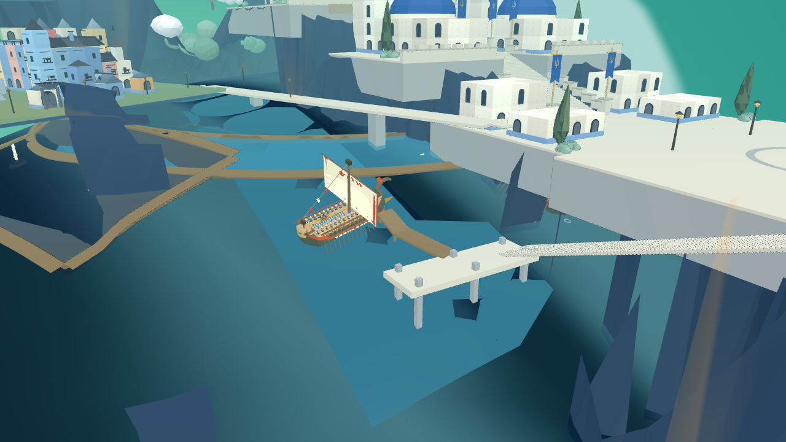

最后约6.42米路径已通过加密碰撞检查，原游戏播放函数的101个进度点也通过。登船台已适配当地球面水平。拼接后的驶入与倒出通过201个船体检查点，接点没有位置或转向跳变。

画面中的船为检查实例。原交汇处24米范围尚未找到符合当前净空条件的水上端点。原剧情舰队尚未改道，外海衔接、跳板展开和原士兵上下船仍待接入。城市整体仍在对照认可目标图重构。
返回8931原游戏 · 网页检查记录 · Godot姿态同步记录